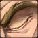
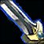
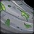
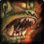
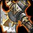
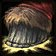

RACIAL ABILITIES
Know your advantage. Explore the racial abilities behind your next Forever build.
40 racial abilities · 10 race entries
Your classAll classes Druid Hunter Mage Paladin Priest Rogue Shaman Warlock Warrior
FactionBoth factions Alliance Horde
Reset filters
10 races · 40 abilities
Alliance 5 races · 20 abilities
Will to Survive Active Removes all Stun effects.

Perception Active Dramatically increases stealth detection for 20 sec.

Sword Specialization Passive Swords increase spell and ability critical chance by 2%.
The Human Spirit Passive Spirit increased by 5%.
Playable classes Warrior · Hunter · Mage · Rogue · Priest · Warlock · Paladin
Find Treasure Active Allows the dwarf to sense nearby treasure, making it appear on the minimap.
Stoneform Active Removes all Poison and Disease effects and reduces Physical damage taken for 8 sec.
Mace Specialization Passive Maces increase spell and ability critical chance by 1%.
Big Game Hunter Passive Damage to Beasts increased by 5%.
Playable classes Warrior · Hunter · Rogue · Priest · Paladin · Shaman
Night Elf 4 racial abilities
#
Elune's Light Active Increases critical chance by 10% for 15 sec.
Shadowmeld Active Activate to slip into the shadows, reducing the chance for enemies to detect your presence. Lasts until cancelled or upon moving. Any threat is restored versus enemies still in combat upon cancellation of this effect.
Quickness Passive 1% increased Dodge chance and 2% increased run speed.
Wisp Spirit Passive Transform into a wisp upon death, increasing speed by 75% while dead.
Playable classes Warrior · Hunter · Rogue · Priest · Druid
Eureka! Active Your next 3 spells or abilities cost less and deal 10% more damage or healing.
Expansive Mind Passive Increases your maximum resource (Mana, Rage, or Energy).
Engineering Specialization Passive Engineering skill increased.
Escape Artist Active Escape the effects of any immobilization or movement speed reduction effect.
Playable classes Warrior · Mage · Rogue · Priest · Warlock
Skyborne (High Order) 4 racial abilities
#
Walk on Air Active Glide through the air for 10 seconds while descending.
Read Ley Line Active Activate a ley line to increase Health and Mana regeneration by 100%.

Wind Blessed Passive Melee, ranged, and spellcasting Haste increased by 1%.
Elemental Insight Passive Deal 5% more damage to Elementals.
Playable classes Warrior · Hunter · Mage · Rogue · Druid
Horde 5 races · 20 abilities

Blood Fury Active Increases Attack Power and Spell Power by 10% for 15 sec.
Shatter Curse Active Immunity to Curses and Banes and reduce Magical damage taken for 8 sec.

Axe Specialization Passive Axes increase spell and ability critical chance by 1%.
Hardiness Passive Stun durations decreased by 20%.
Playable classes Warrior · Hunter · Mage · Rogue · Warlock · Shaman
Will of the Forsaken Active Removes Charm, Fear, and Sleep effects.
Cannibalize Active When activated, regenerates 35% of total health and mana over 10 sec. Only works on Humanoid or Undead corpses within 5 yards. Any movement, action, or damage taken while Cannibalizing will cancel the effect.
Underwater Breathing Passive Underwater breath lasts 300% longer.
Touch of the Grave Passive Your attacks and harmful spells have a chance to drain life from the target, healing you.
Playable classes Warrior · Mage · Rogue · Priest · Warlock · Paladin

War Stomp Active Stuns up to 5 enemies within 8 yards for 2 sec.
Cultivation Passive Grow bonus herbs you can gather without Herbalism.
Plainsrunning Passive Gain increased movement speed the longer you remain moving.
Endurance Passive Total Health increased by 5% and Hit Chance increased by 1%.
Playable classes Warrior · Hunter · Druid · Shaman
Berserking Active +10% attack and cast speed for 10 sec.
Rapid Regeneration Active Regenerate 50% max Health over time.
Beast Slaying Passive +5% damage vs Beasts.
Regeneration Passive 10% of Health regen continues in combat.
Playable classes Warrior · Hunter · Mage · Rogue · Priest · Warlock · Shaman
Skyborne (Windshaper) 4 racial abilities
#
Walk on Air Active Glide through the air for 10 seconds while descending.
Skysight Active Gain an Elemental Blessing that increases run speed by 10%.
Wind Blessed Passive Melee, ranged, and spellcasting Haste increased by 1%.
Elemental Insight Passive Deal 5% more damage to Elementals.
Playable classes Warrior · Hunter · Rogue · Druid · Shaman
No races match these filters. Try another class or faction.